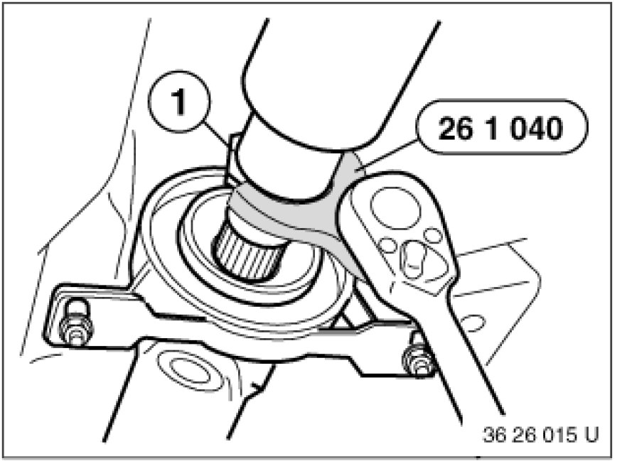
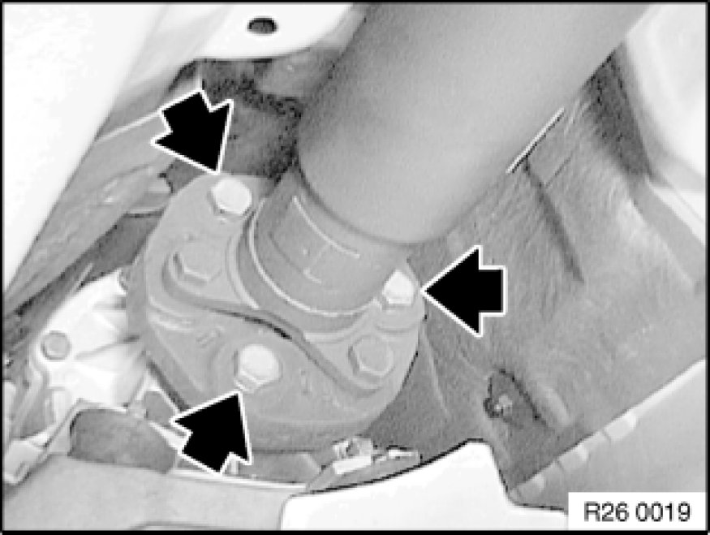
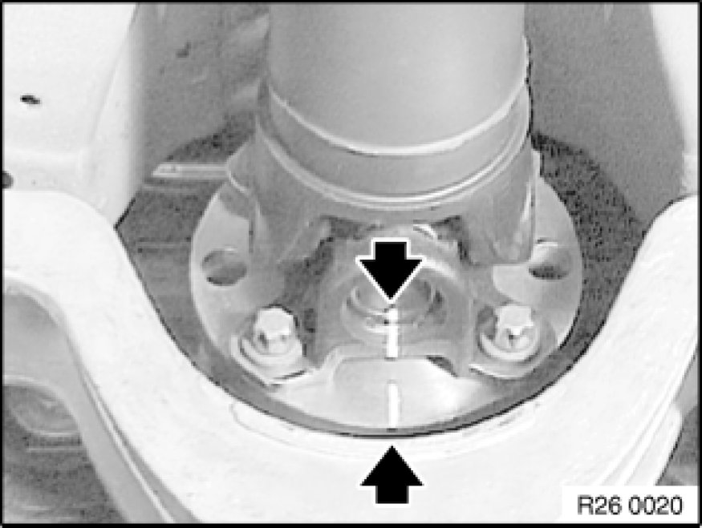
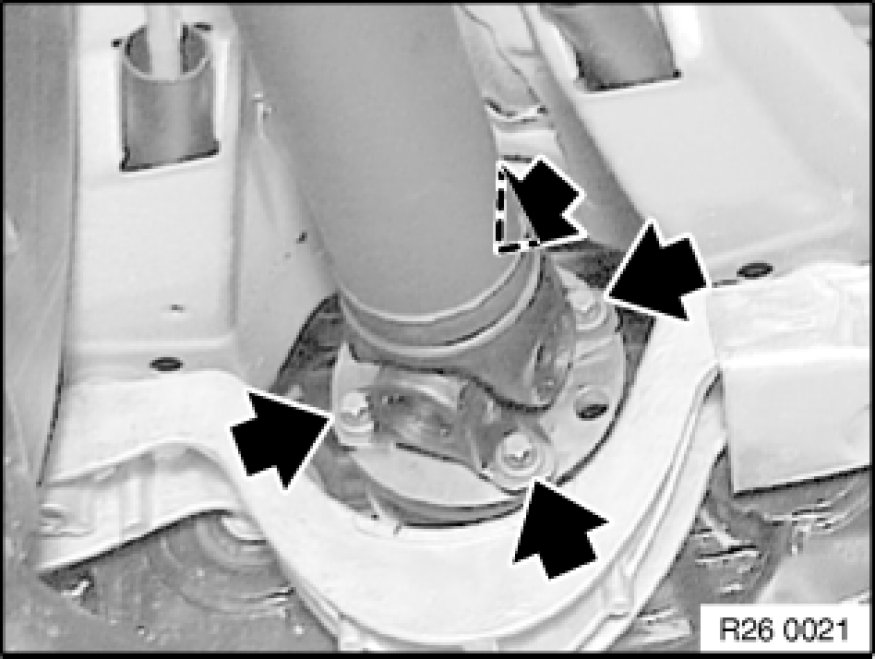
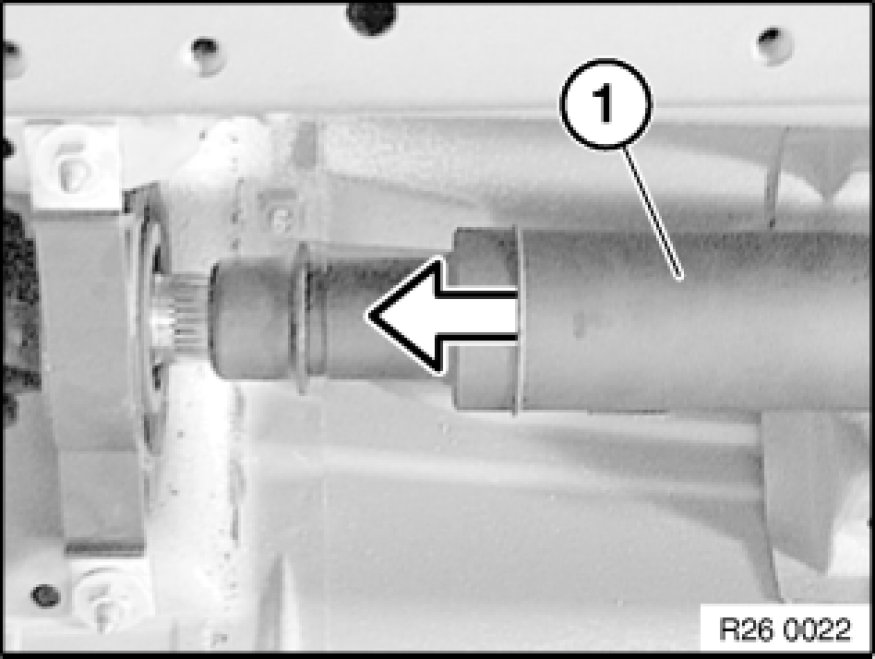
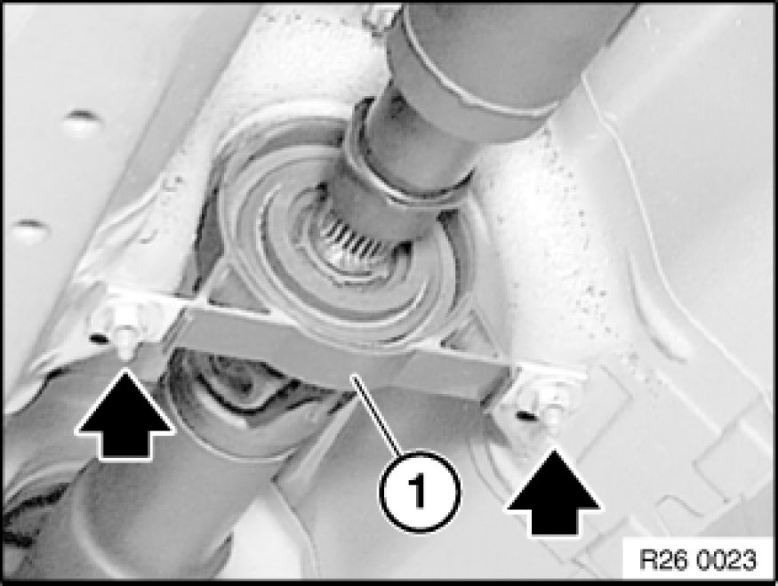
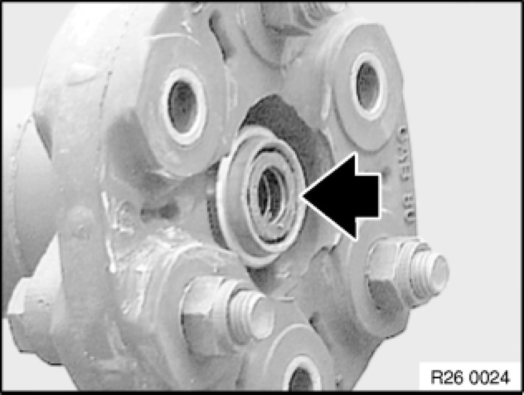

Removing and Installing Propeller Shaft (Cardan Universal Joint) Completely
26 11 000 - Removing and installing propeller shaft (cardan universal joint) completely

Special tools required:
- 26 1 040 26 1 040 Spanner

Necessary preliminary tasks:
- Remove complete exhaust system Service and Repair.
- Remove heat shield.

Release threaded ring (1) several turns with special tool 26 1 040 26 1 040 Spanner.
Installation Note:
Tighten threaded ring with special tool 26 1 040 26 1 040 Spanner.
Tightening torque: 26 11 3AZ [1][2]Drive/Propeller Shaft.

Unfasten screws.
Tightening torque: 26 11 1AZ [1][2]Drive/Propeller Shaft.

Important!
To avoid complaints of humming:
Before removing propeller shaft, mark cardan universal joint to drive flange of final drive.
Reinstall joint in this position.

Unfasten screws.
Tightening torque: 26 11 4AZ [1][2]Drive/Propeller Shaft.

Push rear propeller shaft (1) forwards.

Grip propeller shaft and release nuts.
Tightening torque: 26 11 6AZ [1][2]Drive/Propeller Shaft.
Bend propeller shaft downwards at center bearing (1).
Detach propeller shaft from transmission output flange and remove downwards.

Installation Note:
Check centering; if necessary, replace damaged centering Removing and Installing/Replacing Front Centering Mount for Propeller Shaft.
Grease centering mount.
- Grease: BMW Service Operating Fluids.